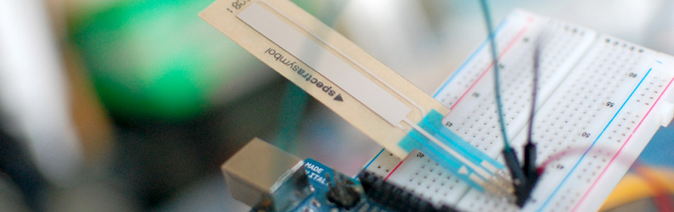

Touch Sliders With A Softpot + Arduino

The really nice thing about these is that they are great for prototypes because you can tell where someone touched it. So if you place a piece of paper with some printed buttons over it, you can mock up surface touch buttons. Or if you need to prototype a rotary touch wheel like the old ipods, but don't want to get involved with complex capitative sensors, you can do that too.
There are a million uses for these, and they come in a few sizes, shapes, and even offer high temperature versions.
Hooking it up
The softpot sensors change their resistance depending on where they are touched. And because they work just like potentiometers you don't need any extra parts to use them with your arduino. We can just plug in the middle pin to an analog in pin on the arduino and we are ready to go.
The arduino analogRead will vary between 0 and 1023 depending on where you touch it, (1023 when not being touched) and is linear, so it will be about 512 if touched in the middle.
WARNING!!!!!
If you touch the softpot at the top and the bottom at the same time, it will get really hot, really quick, and if you leave it for more than a second, you may burn it up. I have no clue why. But beware!
This is especially an issue on the round version. If you press down dead center on the bottom (where the straight parts come off of), you will be pressing on both sides of the pot and it will again get super hot and melt. SO DONT PRESS IT IN THE MIDDLE BOTTOM
Code
The arduino code for this just could not be easier. We are adding some serial prints and delays to it just so you can easily see the readings, but they dont need to be there if you dont need them.
{kind=link}
{kind=link}
int softpotPin = A0; //analog pin 0 void setup(){ digitalWrite(softpotPin, HIGH); //enable pullup resistor Serial.begin(9600); } void loop(){ int softpotReading = analogRead(softpotPin); Serial.println(softpotReading); delay(250); //just here to slow down the output for easier reading }
Article taken from bildr.org with minor changes - I am the original author of this content